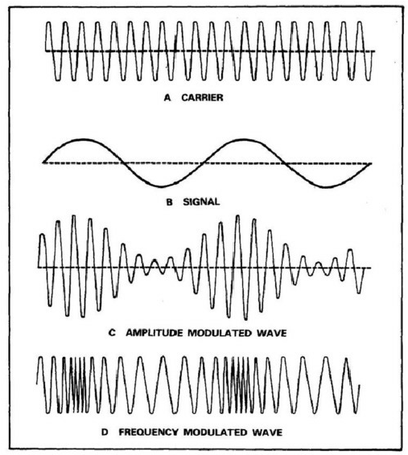
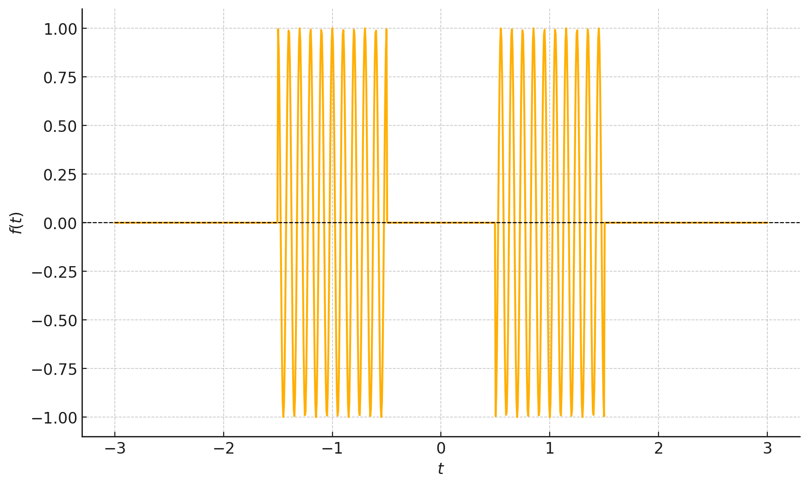
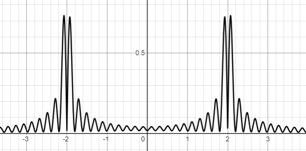

אפנון פאזה (PM) ואפנון תדר (FM)#
אמ;לק
PM: הפאזה מוזזת ע”י \(m f(t)\). FM: התדר הרגעי \(\omega(t)=\omega_0 + m f(t)\) → שקול ל-PM של אינטגרל \(f\). לשניהם עוצמה קבועה → חסינות לרעש אמפליטודה. תדר רגעי = נגזרת פאזה של האות האנליטי (טרנספורם הילברט מוסיף את החלק המדומה). גילוי FM: גזירה → אפנון אמפליטודה → גילוי מעטפת. רוחב סרט גדל עם מדד הסטייה (Carson). ההבדל המהותי בין AM לבין PM/FM: AM מבזבז הספק בנושא ודפוס מעטפת; PM/FM מפזרים אנרגיה סביב הנושא אך שומרים עוצמה.
אפנון PM#
כמו מקודם נתחיל “בנוסחא” של האפנון
זה דיי מתבקש, במקום לאפנן את המידע על האמפליטודה עכשיו נאפנן אותו על הפאזה.
יתרונות:
עוצמת שידור קבועה. גם אם יש רעש חזק וגם אם יש שקט
קל יותר לקלוט? תלוי את מי שואלים
בפועל משתמשים כמעט אך ורק ב-FM שנראה עוד מעט שהוא מקביל לחלוטין ל-PM
אפנון FM#
על מנת להגדיר שידור FM נשאל את השאלה מה הוא “התדר בכל זמן”. השאלה הזו צריכה לצרום לכם מאוד חזק. מה זה תדר בזמן מסויים!? תדר הוא משהו לא לוקאלי בזמן. להפך, ככל שמתמקדים יותר בנקודת זמן ספציפית (כלומר יש לנו פיסה קצרה יותר מהאות) נוכל לדעת פחות טוב מה הם התדרים שמשתתפים באות
מכאן מגיעה מסקנה ראשונה:
Warning
תדר רגעי הוא לא התדר מפירוק פורייה \(\underset{\text{ןמזב}}{\underbrace{\omega\left(t\right)}}\ne\underset{\text{רדתב}}{\underbrace{\tilde{F}\left(\omega\right)}}\)
נשאלת השאלה מה הוא כן? יש לנו אינטואיציה לגבי זה. היינו רוצים לומר שליצור \(\cos\left(\omega_{0}t\right)\) יש תדר קבוע של \(\omega_{0}\). והיינו רוצים שזאת תהיה תכונה לוקאלית. כלומר שאם באזור מסויים של הפונקצייה היא מתנהגת כמו \(\cos\left(\omega_{0}t\right)\) אז נאמר שיש לה שם תדר \(\omega_{0}\).
נציע הגדרה:
נחזור עוד מעט להבנה טובה יותר של מאיפה הגיע ההגדרה הזו
אבל עכשיו נוכל לדרוש:
וקיבלנו כי:
הקשר בין PM ל-FM:
אפנון FM הוא אפנון PM של האות \(\intop_{0}^{t}mf\left(t\right)dt\)
נשווה בין שלושת האפנונים האנלוגים

נשים לב שבנקודות שהאות מקבל מקסימום:
AM מקבל מקסימום אמפליטודה
FM מקבל תדר רגעי מקסימלי
PM נמצא בתדר רגעי של הגל הנושא משום שהנגזרת היא 0
האות האנליטי#
ננסה לחשוב קצת יותר על התדר הרגעי. מאיפה הבאנו אותו. הסתכלנו על הפונקצייה \(\cos\left(\phi\left(t\right)\right)\) שמלבד לעובדה שהיא חסומה בין מינוס 1 ל-1 אין בה משהו מיוחד. הסתכלנו על זמן קצר ורשמנו כי:
כלומר קירוב סדר ראשון לשינוי בפאזה את מהירות השתנות הפאזה הגדרנו בעזרת התדר הרגעי. באיזה עוד דרך ניתן להגיע לזה? אם נוסיף לאות שלנו חלק מדומה \(\sin\left(\phi\left(t\right)\right)\) נקבל:
אבל רגע, מה מבטיח שזה החלק המדומה הנכון? מאות ממשי בלבד אפשר לבנות הרבה הרחבות מרוכבות. כדי לבחור אחת מהן נגדיר את האות האנליטי כך שלא יהיו בו תדרים שליליים, והחלק הממשי שלו יהיה האות המקורי.
במרחב התדר זה פשוט: מכפילים את התדרים החיוביים ב-2, מאפסים את השליליים ומשאירים את רכיב ה-DC כפי שהוא:
למה פקטור 2? כי כשניקח את החלק הממשי נוסיף גם את התמונה הצמודה בתדר השלילי ונחלק ב-2. כך נקבל בחזרה את האות המקורי:
איך מוצאים את החלק המדומה בזמן? בעזרת טרנספורם הילברט:
כאשר:
כלומר לא מכפילים ב-1 ובמינוס 1, אלא ב-\(-i\) עבור תדרים חיוביים וב-\(i\) עבור תדרים שליליים. זו הזזת פאזה של \(-\frac{\pi}{2}\) ושל \(\frac{\pi}{2}\), בהתאמה, בלי שינוי בגודל הרכיבים שאינם DC. מכפילים כל תדר במספר קבוע שאינו תלוי באות, ולכן זו פעולת LTI.
למשל, עבור \(\omega_{0}>0\):
לא הוספנו מידע עצמאי: שני החלקים של האות האנליטי נקבעים מתוך האות הממשי. במימוש אפשר לעבוד עם שני ערוצים — אחד עבור החלק הממשי ואחד עבור החלק המדומה.
עכשיו נוכל לכתוב את האות האנליטי בתור מעטפת כפול פאזה:
בנקודות שבהן \(f_{a}\left(t\right)\ne0\) נבחר ענף רציף של הפאזה, ונגדיר:
שימו לב להבדל קטן: גודל הנגזרת של האות המנורמל נותן את הערך המוחלט של התדר הרגעי:
אפשר להשמיט את הערך המוחלט רק אם מניחים שהתדר הרגעי אינו שלילי. היעדר תדרי פורייה שליליים אינו מבטיח לבדו שנגזרת הפאזה תמיד חיובית. בנקודות שבהן המעטפת מתאפסת הפאזה והתדר הרגעי עלולים להיות לא מוגדרים.
Warning
אם מתחילים מייצוג כלשהו \(f\left(t\right)=A\left(t\right)\cos\left(\phi\left(t\right)\right)\), לא מובטח שהאות האנליטי שלו הוא בדיוק \(A\left(t\right)e^{i\phi\left(t\right)}\). הזיהוי הזה נכון כאשר ההרחבה המרוכבת שבחרנו מקיימת את תנאי הספקטרום של האות האנליטי. אחרת צריך לחשב את האות האנליטי בעזרת הילברט, ורק אז למצוא את המעטפת ואת הפאזה שלו.
למי שרוצה להעמיק בהגדרות ובהנחות: Estimating and interpreting the instantaneous frequency of a signal. I. Fundamentals
פאזה רגעית:
הפאזה הרגעית היא הפאזה של האות האנליטי, והתדר הרגעי הוא הנגזרת שלה. טרנספורם הילברט נותן את החלק המדומה של האות האנליטי מתוך האות הממשי, באמצעות הזזת פאזה של רבע מחזור לכל רכיב תדר שאינו DC.
דוגמה לשוני בין תדר רגעי לתדר פורייה
ניקח את הדוגמא הבאה:
ניתן לראות אותה בסרטוט:

נשים לב שבזמנים של הפולסים התדר הרגעי הוא בבירור \(\omega_{0}\) בעוד אם עושים פורייה של האות הזה מקבלים:
או בסרטוט:

בקצרה מקבלים כי:
כלומר שהתדר הזה בכלל לא נמצא בפורייה של האות!
הגדרות לתדר#
עד עכשיו נתקלנו בשתי הגדרות לתדר. אני רוצה להוסיף אחת שלישית
המקדם \(\tilde{F}\left(\omega\right)\) של הרכיב \(e^{i\omega t}\) בטרנספורם פורייה
תדר רגעי - \(\omega\left(t\right)\equiv\frac{d\phi\left(t\right)}{dt}\)
נגדיר משהו שיותר קרוב לאיך שאנחנו שומעים, טרנספורם פורייה עם הפרדה בזמן \(X_{STFT}\left(\omega,t\right)=\intop_{t-T}^{t}f\left(t^{\prime}\right)e^{-i\omega t^{\prime}}dt^{\prime}\)
קיבלנו שהספקטרוגרמה היא הפורייה של האות מרוחה בתדר. נשים לב שיש לנו טריידאוף בין רזולוציה תדרית לרזולוציה זמנית בעזרת שינוי של הפרמטר \(T\). נקבל כי:
ברזולוציה בתדר - \(\Delta\omega=\frac{2\pi}{T}\)
ברזולוציה בזמן - \(\Delta t=T\) נקבל שוב תוצאה חשובה:
אני מזמין אתכם לשחק קצת עם ספקטרוגרמות ואיך הן נראות באתר הזה: ספקטרוגרמה
עד כאן הסקירה של “ההגדרות” השונות לתדר
גילוי FM#
כבר יש לנו רמז לאיך נבצע גילוי. מה יקרה אם נבצע גזירה?
מה קיבלנו? אם נניח כי התדר הרגעי קטן מהתדר הנושא \(\frac{d\phi\left(t\right)}{dt}\ll\omega_{0}\) נקבל כי הגל הזה הוא פשוט אפנון AM. כלומר נוכל להשתמש בשיטות הקודמות על מנת לקלוט אותו.
קליטת FM:
על מנת לקלוט FM ניתן להעביר אותו במעגל גזירה ואז לבצע גילוי AM
חשוב לציין שצריך לעשות גילוי לא קוהרנטי משום שהאות הוא לא בדיוק אפנון AM אלא אפנון AM עם רעש פאזה משמעותי (כלומר הגל הנושא משנה את התדר שלו לפי המידע) ולכן צריך להשתמש בגילוי לא קוהרנטי אשר לא רגיש לפאזה!
נראה איך הגזירה הופכת שינוי בתדר לשינוי במשרעת, ואיך גילוי המעטפת מחזיר את המידע. גלאי המעטפת כאן אידאלי; את השפעת מעגל ה־RC אפשר לבדוק בהדגמה בפרק AM.
מ־FM למידע: גזירה וגילוי מעטפת
טוענים את הגלאי…
רוחב סרט של אפנון PM#
נציין שהניתוח עבור אות כללי הוא מורכב אנליטית. ננסה לקחת אות פשוט ולנתח אותו. ניקח:
חשוב לדעת איך האות נראה בתדר כדי להבין איך הוא יראה במוצא של כל מערכת LTI כמו כל פילטר שנשים במקלט או באנטנת השידור
נשתמש בנוסחה טריגונומטרית: $\(g_{PM}\left(t\right)=\cos\left(\omega_{0}t\right)\cos\left(\beta\sin\left(\omega_{m}t\right)\right)-\sin\left(\omega_{0}t\right)\sin\left(\beta\sin\left(\omega_{m}t\right)\right)\)$
נחקור רק את החלק הראשון משום שהשני יהיה דומה:
כלומר מה שמשנה הם הקבועים \(J_{n}\left(\beta\right)\) החישוב המדוייק לא מאוד משנה (רמז פונקציות בסל) אבל העיקר הוא לראות שאנחנו מקבלים המון “הרמוניות” כלומר רוחב סרט שהוא אפקטיבית מאוד מאוד גדול למזלנו יש כלל אצבע שאומר כמה האות באמת דואך (כלומר מה הדאיכה של המקדמים)
וגם כאן נשים לב שעבור \(\beta\ll1\) נקבל רוחב סרט “כפול” ממה שרצינו
איך נראה אות FM בפועל? אפשר פשוט לבדוק :) מזל שיש מספיק חובבים של רדיו ברחבי העולם נבדוק מה קורה בניוזילנד שימו לב שאתם צריכים לבחור את התדר Clone RTL: Hauraki
אם הקישור הזה כבר לא עובד מוזמנים לחפש בעצמכם כאן על המפה מקלטים אחרים: OpenWebRX